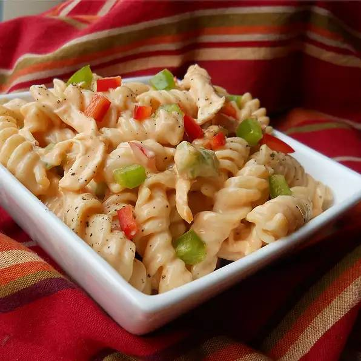

Buffalo Chicken Pasta Salad

Descriptions
Really popular as a side dish for a barbeque or just about any gathering you can think of. You can substitute or
add many different vegetables with this recipe.
Ingredients
- 1 (16 ounce) package uncooked rotini pasta
- 1/2 cup mayonnaise
- 1 cup chunky blue cheese dressing
- 1/2 cup buffalo wing sauce
- 1 teaspoon salt
- 1/2 teaspoon black pepper
- 1 pound frozen cooked chicken strips, defrosted and diced
- 1/2 cup red bell pepper, diced
- 1/2 cup green bell pepper, diced
- 1 cup red onion diced
Directions
- Find a large pot with lightly salted and water and bring it to a rolling boil over high heat
- Once the water is boiling, stir in rotini and return to a boil
- Cook uncovered, stir occasionally until the pasta has cooked through but still firm to the bite
- Wait 8 minutes
- Drain well in a colander set in the sink
- Stir the mayonnaise, blue cheese dressing, buffalo wing sauce, salt and pepper in a large bowl
- Add chicken, bell peppers, red onion, and cooked pasta and toss to coat with the dressing
- Cover it up and put it in a refrigator for at least an hour
- Ready to serve
Index